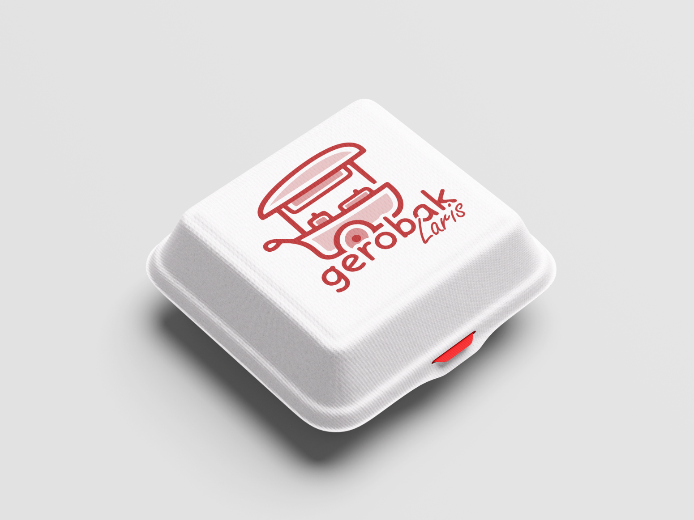
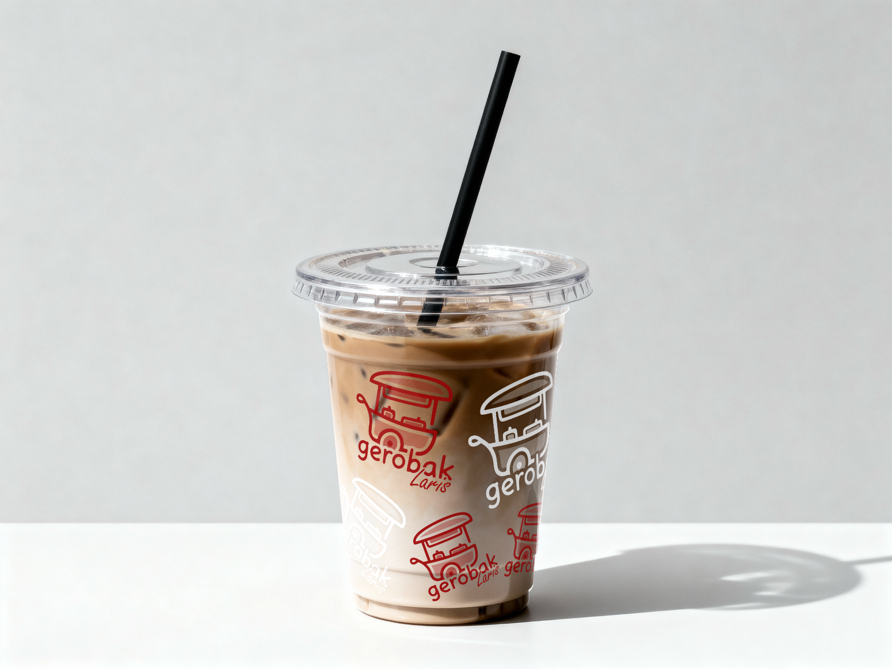
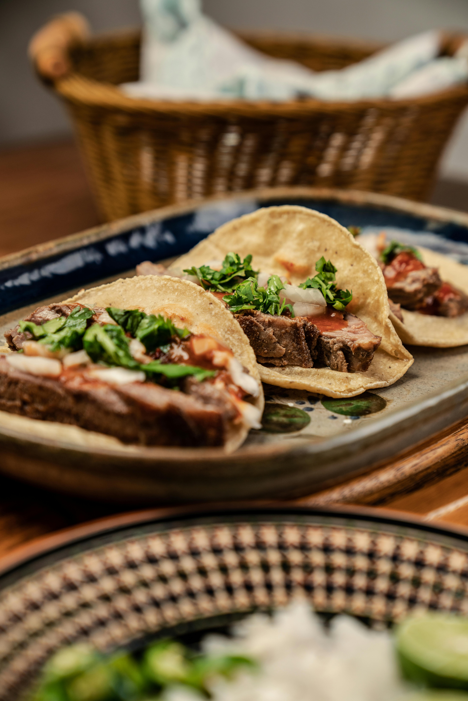

Brand Identity
GEROBAK LARIS
Logo Variants
Bentuk logo resmi Gerobak Laris yang disesuaikan dengan kebutuhan latar belakang dan ruang aplikasi, untuk memastikan keterbacaan yang maksimal.


Filosofi
Visual
Pendekatan desain yang memadukan kehangatan street food tradisional dengan estetika modern yang ramah dan mengundang.
Gaya "Doodle" Organik
Garis-garis tangan yang tidak kaku menciptakan kesan hangat, personal, dan ramah (friendly), menjauhkan kesan korporat yang kaku.
Simbolisme Gerobak
Ikon gerobak merepresentasikan warisan kuliner jalanan (street food) yang autentik dan selalu bergerak mendekati pelanggan.
Tipografi "Laris"
Tulisan sambung yang mengalir mengekspresikan kelancaran dan pergerakan, doa agar bisnis selalu laris dan ramai pengunjung.
Warna Identitas
Palet warna yang merepresentasikan kehangatan, kelezatan rasa, dan keramahan jalanan.
Deep Maroon
HEX: #801013
RGB: 128, 16, 19
Soft Red Fill
HEX: #BA383C
RGB: 186, 56, 60
Warm Blush
HEX: #BE8284
RGB: 190, 130, 132
Sticker White
HEX: #FFFFFF
RGB: 255, 255, 255
Sistem Tipografi
Kombinasi font sans-serif modern yang bulat dan ramah dengan script typeface kasual untuk memberikan sentuhan personal dan dinamis pada identitas visual.
Nunito Bold
Display / Heading Font
Rasa Bintang Lima,
Harga Kaki Lima.
Aa Bb Cc Dd Ee Ff Gg Hh Ii Jj Kk Ll Mm Nn Oo Pp Qq Rr Ss Tt Uu Vv Ww Xx Yy Zz
0 1 2 3 4 5 6 7 8 9 ! @ # $ %
Caveat Script
Accent / Script FontPasti enak, lagi...
Aa Bb Cc Dd Ee Ff Gg Hh Ii Jj Kk Ll Mm Nn Oo Pp Qq Rr Ss Tt Uu Vv Ww Xx Yy Zz
0 1 2 3 4 5 6 7 8 9
Implementasi Desain
Visualisasi bagaimana identitas merek diterapkan pada berbagai media fisik dan digital/Cetak.



Hidden Gem
Vibes


Breakfast Bliss

Hot, Gurih & Renyah

Kelezatan Kuah Segar